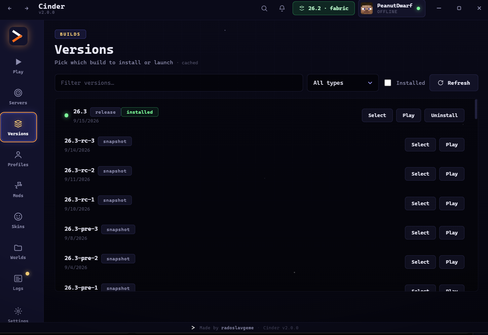
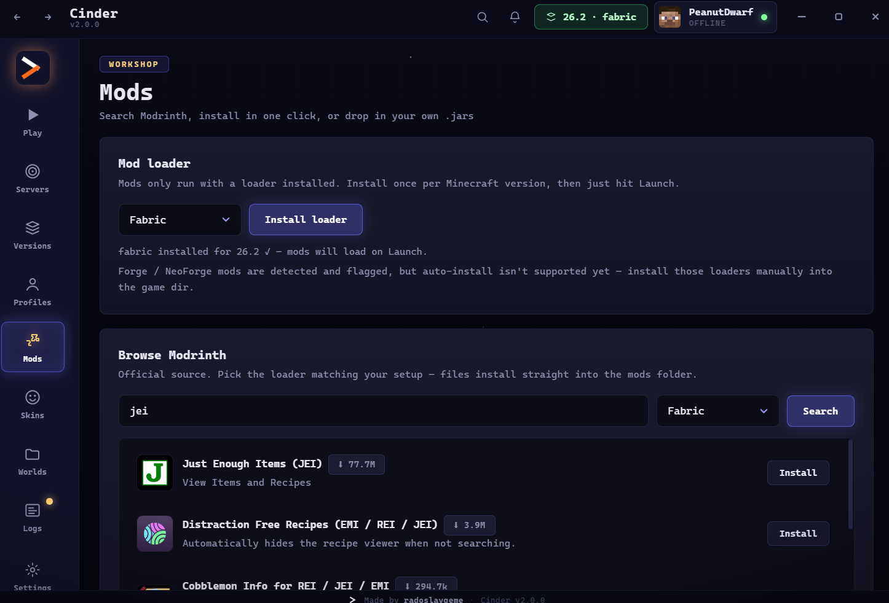

Feature Tour
Launcher mapped end to end
Everything below ships in Cinder v2.0.0 and is verified against the app. Screenshots are from the real launcher.
Offline + Microsoft Sign-In
Two ways to play. Offline profiles with a built-in name forge that generates guaranteed-valid usernames. Microsoft login with automatic token refresh for premium servers like Hypixel.
- Name Forge: Five styles (Mixed, Ember, Hero, Dark, Cute) — click suggestions to fill, then Add. Names checked against existing accounts.
- Microsoft Login: One click opens the OAuth flow. Token auto-refreshes on launch — no re-login needed.
- Avatar & Status: Minotar helm avatars, online/offline badges, click-to-activate.
- Honest UX: Offline accounts show "cracked servers only" — no false promises about premium servers.


Versions, Honestly Cached
Live Mojang manifest with a 6-hour disk cache and offline fallback. Search, filter by type (release/snapshot/beta/alpha), see installed badges, uninstall in one click.
- Live + Cached: Fetches from Mojang, caches for 6 hours, falls back to disk if offline.
- Smart Filters: Release, Snapshot, Beta, Alpha — or show only installed.
- One-Click Uninstall: Removes version files; saves and mods stay untouched.
- Version Picker: Quick-select from Play tab with installed indicator.
Fabric & Quilt Auto-Install + Modrinth In-App
Pick a loader and it installs itself for the selected version on next launch. Modrinth search with version picker, enable/disable toggles, custom .jar support.
- Loader Auto-Install: Fabric or Quilt — one toggle, installs on launch. Profile created automatically.
- Modrinth Search: Search by name, filter by loader, pick exact file version.
- Compatibility Warnings: Forge/NeoForge mods flagged with clear reason — no silent crashes.
- Local Management: Enable/disable without deleting, delete with confirmation, open mods folder.
- Auto-Loader Detection: Installing a Fabric mod auto-selects Fabric loader.


Live Server Pings
Featured networks show live players, MOTD, and latency — refreshed every 60 seconds. Custom IP quick-join fills the server field on Play tab automatically.
- Native Probe: Rust
slp-probebinary (zero deps, protocol 767) with pure-Node fallback. - 60s Cache: Prevents hammering servers; manual refresh available.
- Featured Networks: Hypixel, PikaNetwork, GommeHD, 2b2t, MineWind, Wurst, CraftMend.
- Custom Quick-Join: Paste any Java IP — Cinder auto-joins on launch.
- Filter Chips: All / Minigames / SMP / Anarchy.
3D Skin Previews
Auto-spinning 3D view (skinview3d) with walking pose. Try any Java username, load your active profile skin, or import a classic 64×64 PNG from disk.
- Live Fetch: Type any username → preview fetches skin via launcher backend (24h disk cache).
- Profile Skin: One click loads the active account's skin.
- PNG Import/Export: Upload 64×64 PNG, download current canvas frame.
- Locked Camera: Zoom and pan disabled so it never flies away.


World Backups & Restore
Singleplayer saves listed with size and modified date. Zip a backup in one click, restore the newest backup later (current world kept as timestamped copy), delete with confirmation.
- Backup: Zips to
/backups/ -YYYYMMDD-HHMM.zip - Restore: Extracts newest backup for that world; current folder kept as
.bak-. - Delete: Removes save folder with confirmation modal.
- Quick Actions: Refresh, open saves folder, open screenshots folder.
JVM Presets, Java Auto-Pick & Diagnostics
Tune garbage collection for smoother frames, let Cinder pick the right Java per version, and copy full diagnostics for support in one click.
- JVM Presets: Balanced (default), Performance (G1GC throughput), Low-Latency (ZGC, Java 21+ only).
- Java Auto-Detect: Scans JAVA_HOME, PATH, Adoptium, Microsoft, Temurin, BellSoft, Zulu, Mojang-bundled — no hardcoded paths.
- RAM Sliders: Min/Max with presets (Potato 2G, Balanced 4G, Beast 8G, Overkill 12G) + system hint.
- Diagnostics Copy: Version, Java list, settings, net probes (Mojang/Modrinth/Minotar) + log tail.
- Update Checker: On-launch GitHub release check + manual "Check now" button.


Discord Rich Presence — Zero Setup
Keep the Discord desktop app open. Your profile automatically shows "Playing Cinder" + logo + Download button. In game it switches to "Playing Minecraft 1.21" + player → server with timer.
- No Bot, No Token: Shared Application ID baked into the launcher — works like Valorant's auto-status.
- Auto-Switch: Launcher → "Playing Cinder", In-game → "Playing Minecraft {version}" + "{player} → {server}".
- Customizable: Override Application ID, change download button link, toggle on/off.
- Troubleshooting: Built-in Test button, retry every 30s, documented fix for Discord's built-in Minecraft detection.
Ready to launch?
Download Cinder v2.0.0 for Windows, macOS, or Linux. No installer required — just run and play.
Proprietary software · © 2026 radoslavgeme · All rights reserved